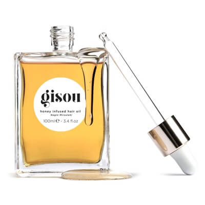
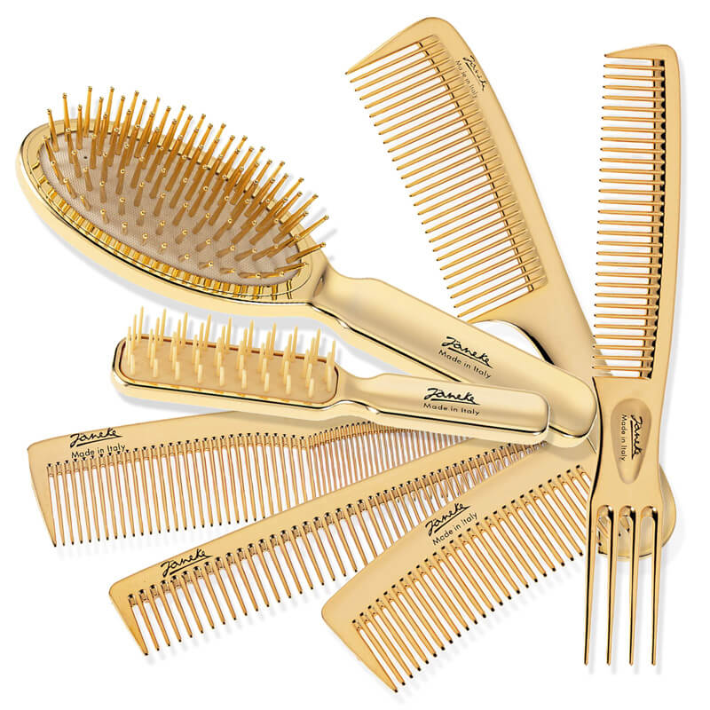
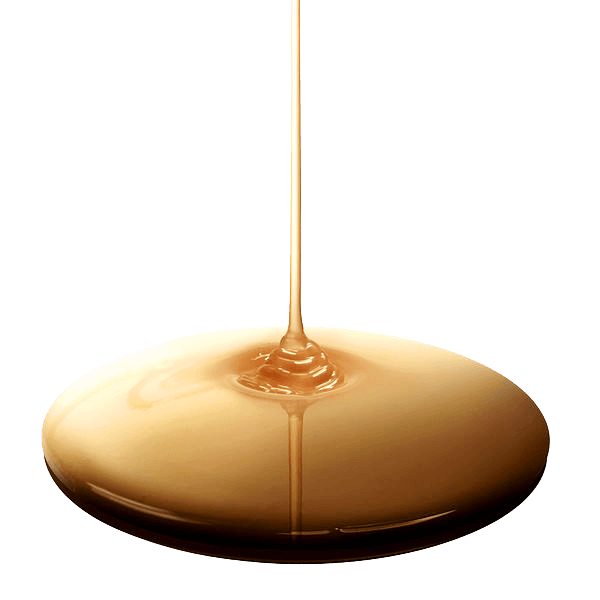
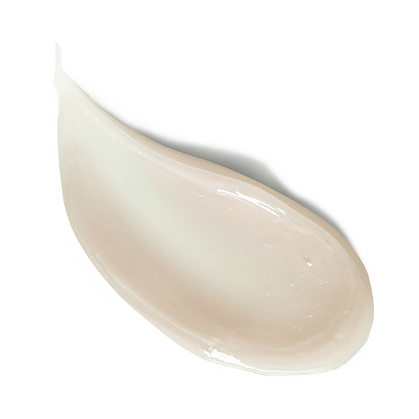
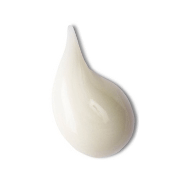
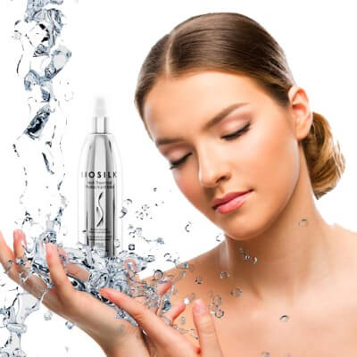
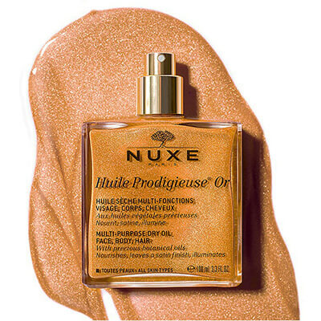

Тонкие, непослушные, вьющиеся, пушистые, здоровые, ломкие, тусклые, гладкие, прямые и так до бесконечности... Какими бы ни были Ваши волосы, им всегда требуются внимание, уход и защита. Питательные кислоты + полезные натуральные компоненты и витамины = здоровые ухоженные волосы и кожа. Откройте для себя и своих волос нежную формулу масел.
Подробнее
На красоту и здоровье волос немалое влияние оказывают внешние факторы: жёсткость воды, сушка феном, применение утюжков, стайлеров и плоек, химическая и биозавивка, окрашивание, и т.д. После таких процедур волосам необходимо восстановление жизненных сил и тонуса. Скорую помощь на этом этапе могут оказать косметические средства и процедуры по уходу за волосами.
Подробнее
У каждого из нас есть своя любимая расчёска, которой мы пользуемся в основном для того, чтобы причесать волосы, привести их в порядок. И чаще всего в домашних условиях мы используем один и тот же предмет для расчёсывания, укладки и сушки, распутывания, создания причёски. Но такой подход может оказаться чреватым для здоровья волос и кожи головы. Для каждой расчёски есть своё специальное предназначение.
Подробнее
Правильно подобранный шампунь не только избавит вас от перхоти и жирноcти, но и придаст объём, пышность и здоровый блекс волосам. Ассортимент шампуней достаточно велик и здесь важно не ошибиться в выборе подходящего моющего средства для волос.
Читать далее
Для лёгкого и беспрепятственного расчёсывания, гладкости и блеска хорошими помощниками являются бальзамы-ополаскиватели и кондиционеры для волос. Эти косметические средства предназначены для ухода за волосами, улучшения их структуры, укрепления кутикулы, придания эластичности и упругости.
Читать далее
Маски для волос хороши своими уникальными свойствами. В состав этих косметических средств входят различные органические масла, растительные экстракты, витамины и полезные химические соединения. Маски являются мощными защитниками волос от внешних воздействий и окружающей среды. Способствуют быстрому проникновению в подкожные слои и фолликулы, питают волосы изнутри и укрепляют их снаружи.
Читать далееВымойте волосы шампунем и затем нанесите бальзам-ополаскиватель или кондиционер, оставьте на несколько минут. Тщательно смойте косметические средства тёплой водой.
Заверните волосы в махровое полотенце и оставьте на некоторое время, пока не впитается лишнаяя вода. Бережно расчешите влажные волосы, чтобы избавиться от спутанных узелков.
Подготовье пряди для создания укладки: распределите термозащитные средства по всей длине волос, начиная с кончиков, затем нанесите спрей для придания прикорневого объёма.
Разделите волосы на пряди, начинайте укладку с лобной или затылочной части, собрав остальные волосы в пучёк. Натяните прядь на брашинг и просушивайте феном, слегка вытягивая волосы вверх.
Аргановые масла являются одним из редких компонентов, входящих в состав косметики. Растительные масла богаты каротином, полиненасыщенными жирными кислотами, химическими соединениями (токоферолами).
Масло арганы применяется в качестве косметического средства по уходу за волосами, оно питает кожу головы и корни волос, укрепляет и восстанавливает их структуру, придаёт насыщенный естественный блеск. Эти масла также применяют в различных средствах по уходу за кожей.
Применять масла арганового происхождения следует с осторожностью, поскольку могут возникать аллергические реакции.

Сухой воздух, горячие солнечные лучи, душные помещения или волнительные события - какой бы ни была окружающая обстановка, в такие моменты хочется окунуться в прохладу, освежиться, получить заряд бодрости. Если за окном нет моря или принять лёгкий душ нет возможности - существует прекрасное средство, способное облегчить переносимость жары и предупредить обезвоживание! И это средство - термальная вода.
Подробнее
Масляная лихорадка буквально заразила бОльшую часть прекрасной половины человечества. Каждая обладательница такого флакончика осознаёт, что не может прожить ни дня без питательного янтарного эликсира. Мерцающие частички в сочетании с драгоценными маслами преображают и очаровывают. Хотите добавить искорку шарма своему телу и волосам, ловить восторженные взгляды, тогда, это масло - ваш незаменимый спутник.
Подробнее